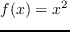

Next: Putting All Together: A
Up: Collective Communications
Previous: Scatter and Gather
Exercises
- Write a program using MPI_Bcast and MPI_Reduce to calculate the
dot product of two vectors. For simplicity, initialize and assign values to
the integer vectors of length 20 (Do this only the root process and
assign the values as you wish). Assume the the the number of processors
evenly divides 20.
- Matrix-Vector multiplication. For this example assume that you will be using 4 processors. On on the root process initialize a 4x4 matrix and
a 4x1 vector. Multiply the matrix by the
vector using MPI_Scatter to distribute the matrix and MPI_Bcast to distribute
the vector to the non-root processes.
Then use MPI_Gather to collect the result.
- Advanced Exercise - Write a program using
MPI_AllReduce to
calculate
the integral of in the interval 0 to 12 using the Trapezoid rule.
Assume 4 processors, you can use the intervals
.
Can you extend this program to handle any interval with any number of processes?
root
2015-12-02